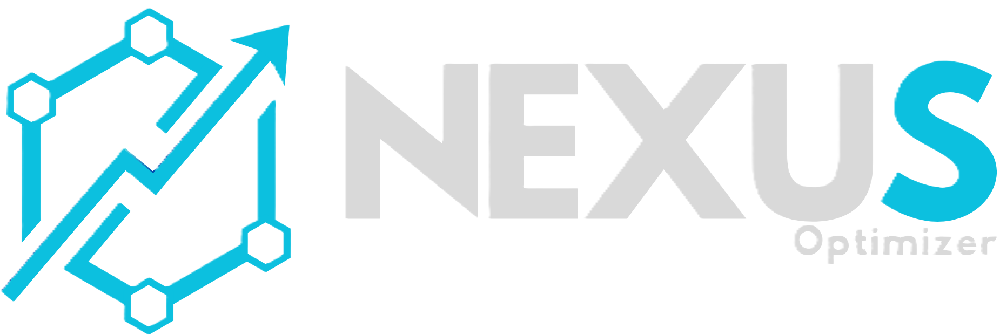

NexusOptimizer v2.0
Tu PC merece rendir al máximo
Una suite ligera e inteligente que limpia, optimiza y acelera tu Windows. Sin complicaciones, sin riesgos.
Descubrir más Comprar ahora
¿Qué es NexusOptimizer?
Imagina que tu PC es un coche deportivo pero con el freno de mano puesto y el maletero lleno de cosas inútiles. NexusOptimizer es el mecánico que suelta el freno, vacía el maletero y ajusta el motor para que corras como nunca.
Con 27 módulos especializados, nuestra herramienta analiza, limpia y configura Windows para que aproveches cada byte de memoria y cada ciclo de CPU. Todo gratuito, local y seguro.
Sin anuncios, sin espionaje, sin suscripciones.
Cuatro pasos, un solo clic
Así de fácil es revivir tu PC
Escanea
Analiza tu sistema en busca de archivos basura, servicios inactivos y cuellos de botella.
Analiza
Te muestra qué está consumiendo más recursos y qué puedes mejorar.
Optimiza
Aplica los ajustes con un clic: libera RAM, limpia el disco, prioriza tu CPU.
Reinicia
Un reinicio aplica los cambios a nivel kernel. Notarás la diferencia al instante.
Módulos de optimización
27 herramientas especializadas para cada aspecto de tu sistema
Lo que dicen nuestros usuarios
Experiencias reales de personas que ya optimizaron su PC
Requisitos mínimos
NexusOptimizer es ligero y funciona en casi cualquier PC con Windows
Compatibilidad probada
Versiones de Windows donde NexusOptimizer ha sido testeado exhaustivamente
Windows 10 y 11 tienen compatibilidad asegurada. Otras versiones pueden funcionar, pero no están testeadas.
| Sistema Operativo | Soporte |
|---|
Consigue NexusOptimizer
Una sola licencia, acceso de por vida a todas las funciones.
Nuestra historia
El camino de NexusOptimizer desde el primer commit hasta hoy